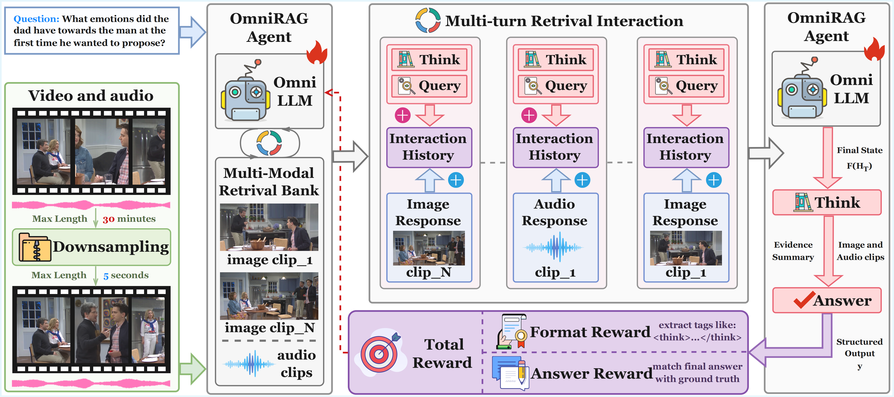
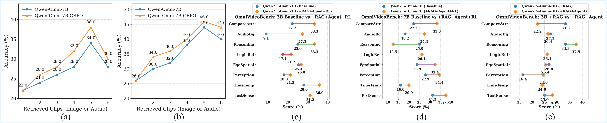
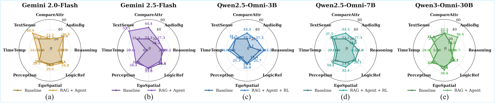

Yifan Zhu · Xinyu Mu · Tao Feng · Zhonghong Ou · Yuning Gong · Haoran Luo

Figure 1: Overview of the OmniRAG-Agent framework. The agent processes long video and audio through downsampling, builds a Multi-Modal Retrieval Bank, and interacts with an OmniLLM over multiple turns — issuing Think and Query actions to retrieve relevant image/audio clips — before synthesizing evidence into a final answer. Training uses Format Reward and Answer Reward signals.
Per-video FAISS indices built from CLIP-encoded keyframes and Whisper ASR transcripts, enabling fine-grained retrieval of short, relevant clips at inference time without dense video encoding.
An OmniLLM iteratively issues Think and Query actions, incorporating retrieved image/audio responses into an interaction history, and synthesizes evidence into a grounded final answer.
End-to-end optimization with Group Relative Policy Optimization using Format Reward and Answer Reward, jointly improving both retrieval tool-use quality and final answer correctness.
Consistently outperforms closed- and open-source baselines across OmniVideoBench, WorldSense, and Daily-Omni under low-resource (3B / 7B parameter) settings, with comprehensive ablation study.
OmniRAG-Agent combines a lightweight retrieval pipeline with an agentic reasoning loop trained via reinforcement learning. The three core components work together to handle long videos within a strict budget constraint.
Videos are downsampled to at most 30-minute clips; keyframes and 5-second audio segments are extracted, embedded with CLIP and Whisper respectively, and stored in per-video FAISS indices served via a FastAPI endpoint.
At each turn the agent emits structured <think> reasoning and optionally a <query> call (image or audio). Retrieved clips are appended to the interaction history before the next turn, up to 20 turns total.
Two rewards guide training: Format Reward checks that structured tags (<think>…</think>) are present, and Answer Reward matches the final answer against the ground truth option, with group-relative advantage estimation.
Evaluated on three benchmarks: OmniVideoBench (audio-visual QA), WorldSense (domain-knowledge video QA), and Daily-Omni (daily-life audio-visual reasoning). Bold indicates the best average performance among open-source methods.
| Method | Mod. | Compare Attr | AudioBg | Reasoning | Logic Ref | Ego Spatial | Perception | TimeTemp | Text Sense | Avg |
|---|---|---|---|---|---|---|---|---|---|---|
| Closed-source Models | ||||||||||
| GPT-5.1 | V | 22.22 | 27.27 | 20.83 | 26.09 | 29.17 | 19.67 | 4.00 | 40.62 | 24.51 |
| Gemini 2.0-Flash | A+V | 22.22 | 36.36 | 25.00 | 30.43 | 26.76 | 29.51 | 16.00 | 31.25 | 27.34 |
| + RAG | A+V | 44.44 | 36.36 | 12.50 | 43.48 | 28.17 | 24.59 | 20.00 | 46.88 | 29.69 |
| + RAG + Agent | A+V | 22.22 | 36.36 | 16.67 | 34.78 | 29.58 | 29.51 | 24.00 | 46.88 | 30.47 |
| Gemini 2.5-Flash | A+V | 22.22 | 18.18 | 25.00 | 34.78 | 35.21 | 31.15 | 4.00 | 31.25 | 28.52 |
| + RAG | A+V | 11.11 | 36.36 | 20.83 | 30.43 | 33.80 | 36.07 | 12.00 | 53.12 | 32.42 |
| + RAG + Agent | A+V | 44.44 | 27.27 | 29.17 | 30.43 | 33.80 | 34.43 | 28.00 | 53.12 | 35.16 |
| Open-source Models | ||||||||||
| Qwen2.5-Omni-3B | A+V | 22.22 | 9.09 | 25.00 | 17.39 | 25.35 | 18.03 | 28.00 | 31.25 | 23.05 |
| + RAG | A+V | 33.33 | 27.27 | 33.33 | 26.09 | 26.76 | 16.39 | 24.00 | 25.00 | 24.61 |
| + RAG + Agent | A+V | 22.22 | 26.36 | 37.50 | 26.09 | 25.35 | 24.59 | 24.00 | 28.12 | 26.95 |
| + RAG + Agent + RL | A+V | 33.33 | 27.27 | 33.33 | 21.74 | 26.76 | 21.31 | 36.00 | 31.25 | 27.34 |
| Qwen2.5-Omni-7B | A+V | 22.22 | 18.18 | 25.00 | 26.09 | 23.94 | 27.87 | 16.00 | 31.25 | 25.00 |
| + RAG | A+V | 22.22 | 27.27 | 12.50 | 39.13 | 22.54 | 24.59 | 40.00 | 40.62 | 27.73 |
| + RAG + Agent | A+V | 44.44 | 45.45 | 29.17 | 26.09 | 28.17 | 22.95 | 24.00 | 34.52 | 28.52 |
| + RAG + Agent + RL | A+V | 33.33 | 27.27 | 12.50 | 26.09 | 32.39 | 34.43 | 20.00 | 37.50 | 29.69 |
| Qwen3-Omni-30B | A+V | 33.33 | 18.18 | 12.50 | 26.09 | 32.39 | 32.79 | 12.00 | 34.38 | 27.73 |
| + RAG | A+V | 11.11 | 36.36 | 8.33 | 26.09 | 38.03 | 26.23 | 20.00 | 34.38 | 28.12 |
| + RAG + Agent | A+V | 33.33 | 36.36 | 16.67 | 21.74 | 38.03 | 27.87 | 28.00 | 25.00 | 29.30 |
| Method | Mod. | Tech & Science | Culture & Politics | Daily Life |
Film & TV | Perfor- mance | Games | Sports | Music | Avg |
|---|---|---|---|---|---|---|---|---|---|---|
| Closed-source Models | ||||||||||
| Gemini 2.5-Flash | A+V | 47.37 | 23.08 | 27.78 | 40.00 | 27.27 | 29.41 | 25.00 | 43.24 | 33.59 |
| + RAG | A+V | 55.26 | 38.46 | 29.63 | 36.67 | 31.82 | 41.18 | 21.88 | 45.95 | 37.50 |
| + RAG + Agent | A+V | 57.89 | 30.77 | 42.59 | 33.33 | 31.82 | 41.18 | 25.00 | 45.95 | 39.84 |
| Open-source Models | ||||||||||
| Qwen2.5-Omni-3B | A+V | 34.21 | 42.32 | 27.78 | 30.00 | 13.64 | 29.41 | 15.62 | 40.54 | 29.69 |
| + RAG | A+V | 34.21 | 26.92 | 25.93 | 30.00 | 31.82 | 41.18 | 31.25 | 35.14 | 31.25 |
| + RAG + Agent | A+V | 36.84 | 26.92 | 31.48 | 26.67 | 27.27 | 29.41 | 40.62 | 45.95 | 33.98 |
| + RAG + Agent + RL | A+V | 36.84 | 30.77 | 40.74 | 40.00 | 36.36 | 35.29 | 15.62 | 51.35 | 36.71 |
| Qwen2.5-Omni-7B | A+V | 34.21 | 30.77 | 29.63 | 33.33 | 22.73 | 29.41 | 18.75 | 40.54 | 30.47 |
| + RAG | A+V | 21.05 | 42.31 | 37.04 | 40.00 | 13.64 | 29.41 | 25.00 | 45.95 | 32.81 |
| + RAG + Agent | A+V | 31.58 | 50.00 | 25.93 | 30.00 | 50.00 | 35.29 | 21.88 | 43.24 | 34.38 |
| + RAG + Agent + RL | A+V | 44.74 | 23.08 | 40.74 | 40.00 | 40.91 | 41.18 | 25.00 | 45.95 | 38.28 |
| Method | Mod. | AV Event Alignment | Comparative | Context Understand. |
Event Sequence | Inference | Reasoning | Avg |
|---|---|---|---|---|---|---|---|---|
| Closed-source Models | ||||||||
| Gemini 2.5-Flash | A+V | 34.63 | 34.38 | 50.00 | 37.10 | 56.82 | 51.11 | 44.53 |
| + RAG | A+V | 38.46 | 39.39 | 45.65 | 41.94 | 54.55 | 55.56 | 46.48 |
| + RAG + Agent | A+V | 26.92 | 34.38 | 46.65 | 53.23 | 59.09 | 60.00 | 48.83 |
| Open-source Models | ||||||||
| Qwen2.5-Omni-3B | A+V | 39.22 | 21.43 | 41.46 | 25.76 | 33.33 | 29.73 | 32.03 |
| + RAG | A+V | 27.45 | 28.57 | 60.98 | 22.73 | 48.48 | 37.84 | 35.94 |
| + RAG + Agent | A+V | 37.25 | 32.14 | 41.46 | 25.76 | 42.42 | 51.35 | 37.11 |
| + RAG + Agent + RL | A+V | 39.22 | 28.57 | 41.46 | 40.54 | 36.36 | 51.35 | 40.09 |
| Qwen2.5-Omni-7B | A+V | 29.41 | 28.57 | 41.46 | 51.52 | 21.21 | 32.43 | 36.33 |
| + RAG | A+V | 37.25 | 35.71 | 46.34 | 33.33 | 42.42 | 48.65 | 39.84 |
| + RAG + Agent | A+V | 45.10 | 39.29 | 56.10 | 33.33 | 48.48 | 35.14 | 42.19 |
| + RAG + Agent + RL | A+V | 27.45 | 32.14 | 51.22 | 59.09 | 45.45 | 45.95 | 44.92 |
Ablation studies examining the effect of retrieval budget (number of retrieved clips) and per-category performance across different model backbones.

Figure 2: Retrieval budget analysis. (a–b) Accuracy vs. number of retrieved image/audio clips for Qwen-Omni-7B and Qwen-Omni-7B+GRPO. (c–e) Per-category dot-plot comparisons showing improvements from +RAG+Agent+RL across all question types on OmniVideoBench.

Figure 3: Per-model radar chart comparison on OmniVideoBench. Radar charts for (a) Gemini 2.0-Flash, (b) Gemini 2.5-Flash, (c) Qwen2.5-Omni-3B, (d) Qwen2.5-Omni-7B, and (e) Qwen3-Omni-30B, comparing Baseline vs. RAG+Agent (and +RL for open-source models) across all eight question categories.
If you find this work helpful, please cite: